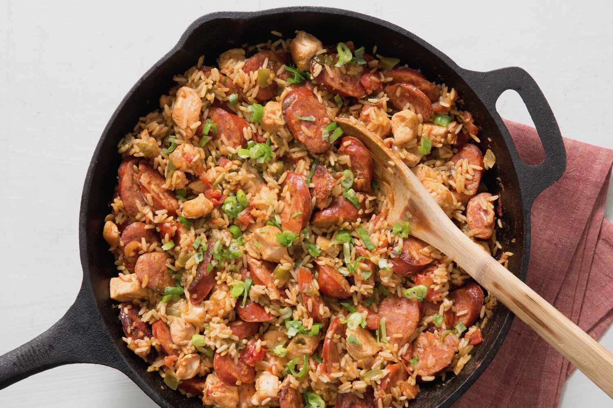

Best Jambalaya

Description
Jambalaya is a one-pot dish that's made with rice, meat or seafood, and vegetables. With French and Spanish influences, jambalaya is quite similar to paella. The name "jambalaya" likely comes from the Provençal word "jambalaia," which means mishmash.
Ingredients
- Oil: Chicken and andouille sausage are sautéed in peanut oil.
- Sausage: Opt for andouille sausage for the most authentic jambalaya.
- Spices and seasoning: This chicken and sausage jambalaya is flavored with Cajun seasoning, fresh garlic, red pepper flakes, salt, pepper, hot sauce, Worcestershire sauce, and file powder.
- Vegetables: This chicken and sausage jambalaya is flavored with Cajun seasoning, fresh garlic, red pepper flakes, salt, pepper, hot sauce, Worcestershire sauce, and file powder.
- Rice: Opt for plain white rice for this jambalaya recipe.
- Broth: Use store-bought or homemade chicken broth to cook the rice.
Steps
You'll find the full, step-by-step recipe below – but here's a brief overview of what you can expect when you make this tried-and-true chicken and sausage jambalaya:
- Cook the meat: Season the sausage and chicken pieces with Cajun seasoning. Sauté the sausage until browned, then remove with a slotted spoon and set aside. Sauté chicken until lightly browned on all sides. Remove with a slotted spoon and set aside.
- cook the vegetables: In the same pot, sauté the onion, celery, bell pepper, and garlic until tender. Stir in the crushed tomatoes and seasonings. Add the meat and cook for 10 minutes.
- Add the rice: Stir in the rice and chicken broth. Bring to a boil, reduce the heat, and cook until all the liquid is absorbed.